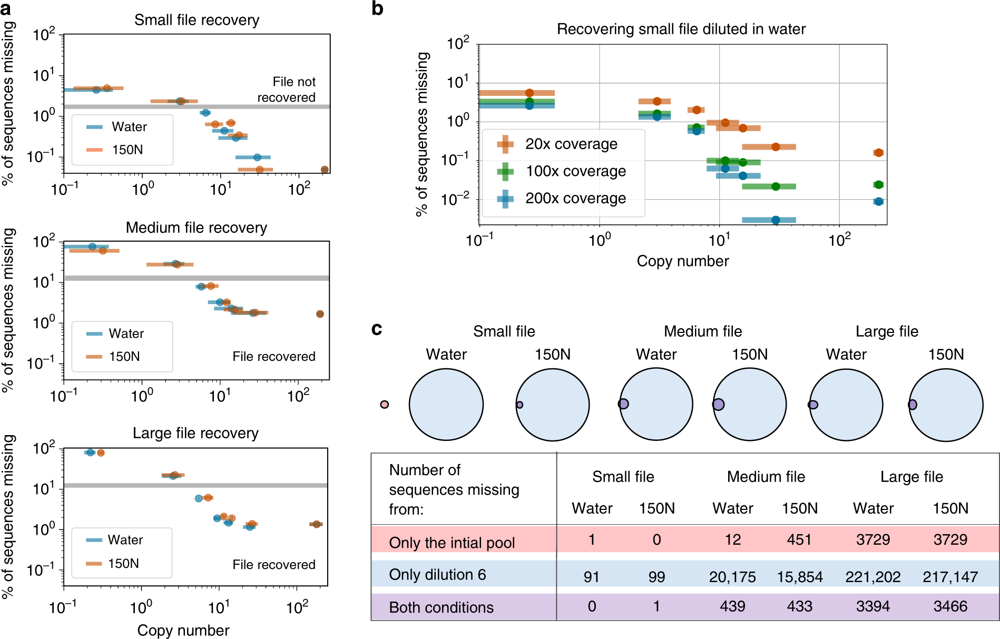

Sequencing Libraries Coverage and FASTQ
라이브러리 커버리지와 FASTQ
시퀀싱 라이브러리 / Read cycle과 coverage / FASTQ와 품질 점수 / 원본 파일 복원
송영준 Youngjun Song / 인천대학교 / 75분
분자에서 디지털 read까지
- 표적 DNA의 준비와 정량
- Adapter가 붙은 sequencing library
- Run 설정과 신호 측정
- Basecalling, 시료 분류, FASTQ
Sequencing library의 정의
- insert: 읽고 싶은 DNA 조각 (게놈 절편, 올리고 한 가닥)
- adapter: 플로셀 표면 올리고(P5 · P7)와 붙는 서열 + read primer 자리
- index(바코드): 샘플마다 다른 6–10 nt 꼬리표 → 여러 샘플을 한 런에 섞은 뒤 다시 나눔(multiplexing)
- 비유: 편지(insert)를 봉투(adapter)에 넣고 주소(index)를 적어 한 우체통(플로셀)에 넣기
- 직지 올리고 한 가닥 = 150 nt insert
- 앞 adapter 약 58 nt + 뒤 adapter 약 63 nt (우리 overhang primer 78 · 83 nt에서 주형과 겹치는 20 nt를 뺀 값)
- 완성 라이브러리 길이 ≈ 150 + 58 + 63 = 271 bp
- 샘플 8개를 서로 다른 index로 붙이면 → 한 플로셀에서 한 번에 읽고, FASTQ 단계에서 index로 8개 파일로 분리
플로셀은 P5 · P7 서열만 붙잡음 · read primer 자리가 없으면 SBS가 시작되지 않음
라이브러리 준비의 목표 = 모든 insert가 같은 양 끝 서열을 갖도록 만들기 — 방법(절편화 · 연결 · PCR)은 insert의 종류에 따라 다름
Adapter index read primer의 위치
Library preparation의 단계
초음파 · 효소로 자르기, 또는 Tn5 transposome이 자르면서 동시에 adapter 일부를 끼움(tagmentation) · 비드에 고정한 BLT는 insert 약 350 bp로 균일
돌출 끝을 채우거나 깎아 평활 말단 → 3′에 dA 하나 추가 (실험 기록: ERP2 30 °C 30 min · ATL 37 °C 30 min)
3′-T 돌출 adapter를 ligase로 연결 (LIG 30 °C 10 min) → 이후 짧은 PCR(8 cycle)로 완전한 P5 · P7 · index 부여
PCR 크기 선별 정량 pooling
P5 · P7이 완전한 분자만 증폭 · cycle 수는 최소로(사례: TruSeq Nano 8 cycle) — 많을수록 중복 read · GC 편향 증가
비드 부피 비로 길이 창을 고름 · adapter 이합체(약 120 bp)는 클러스터만 차지하고 정보가 없음
Qubit(형광 · 질량 ng/µL) — 모든 dsDNA를 셈
qPCR(P5 · P7 primer) — 읽힐 수 있는 분자만 셈 · 로딩 정확도 높음
샘플마다 몰농도를 같게(예 10 nM) 맞춰 같은 부피씩 섞기 → read가 샘플 수만큼 고르게 나뉨 (PART 3 ④)
질량 농도와 몰농도의 환산
- 이중가닥 DNA 1 bp의 평균 질량 ≈ 660 g/mol
- 길이 L bp 분자의 몰질량 = 660 × L g/mol
- nM = (ng/µL) × 10⁶ ÷ (660 × L)
- 같은 ng이라도 짧은 분자일수록 개수가 많음 → 크기(Bioanalyzer · 겔) 확인이 필요한 이유
- 우리 라이브러리: L ≈ 271 bp, Qubit 5.0 ng/µL
- 5.0 × 10⁶ ÷ (660 × 271) = 5,000,000 ÷ 178,860 ≈ 28 nM
- 10 nM로 희석: C₁V₁ = C₂V₂ → 28 × V₁ = 10 × 28 µL → V₁ = 10 µL + 버퍼 18 µL
- iSeq 로딩 농도 50 pM = 10 nM의 1/200 → 1 µL + 199 µL
adapter 이합체가 섞이면 Qubit ng은 같아도 nM 계산이 틀어짐 → 클러스터가 짧은 분자에 낭비
라이브러리 10 nM 정규화 → PhiX 1 nM 4 µL + 라이브러리 16 µL = 20 µL (PhiX 20 %) · 최종 로딩 50 pM, PhiX 10–20 %
데이터 올리고 풀의 library 준비
올리고 150 nt ≈ Illumina read 길이(150) · 이미 짧고, 양 끝 20 nt primer 서열을 모두 공유 → PCR primer 하나로 모든 가닥에 adapter를 붙일 수 있음
3′ 쪽 20 nt = 주형(올리고 끝)과 상보 · 5′ 쪽 꼬리 = Illumina adapter 서열 → 첫 cycle엔 꼬리가 떠 있다가 다음 cycle부터 주형이 됨
F 쪽에 어느 adapter를 달지 정해 두므로 Read 1은 항상 올리고의 앞(F)부터 시작 — PART 4에서 실제 FASTQ로 확인
낮은 염기 다양성과 PhiX
Illumina 기기는 첫 몇 cycle의 영상으로 클러스터 위치를 찾고 색(채널)을 보정 · 한 염기만 빛나면 기준을 잡지 못해 %PF · 품질 하락
염기가 고르게 섞인 PhiX 게놈(약 5.4 kb) 라이브러리를 일정 비율 섞어 매 cycle 네 염기를 모두 보이게 함 · 서열을 알므로 오류율 대조군 역할도 함
iSeq 100 · MiSeq: 저다양성 최소 5 % · NextSeq 1000/2000: 10–50 % · 사례: 10–20 %
대가: PhiX 20 % → 데이터 read의 20 %를 포기 (PART 3 ④)
Cycle과 read 길이
- 1 cycle = dNTP 결합 → 영상 → 절단의 한 바퀴 = 클러스터마다 1 염기
- read 길이(nt) = 그 read에 쓴 cycle 수
- cycle이 쌓일수록 일부 분자가 박자를 놓침(phasing) → 뒤쪽 품질 하락 → 최대 길이 제한
- 제 박자 비율 ≈ (1 − p)ⁿ
- 150 cycle → 150 nt read
- 박자 놓칠 확률 p = 0.5 %, n = 150:
0.995¹⁵⁰ ≈ e^(−0.75) ≈ 0.47 → 신호 절반만 제 박자 - p = 0.1 %면 0.999¹⁵⁰ ≈ 0.86 → 화학 개선이 read를 길게 만든 이유
- 우리 데이터: 2026 런 마지막 cycle(151) 평균 Q ≈ 38.6, iSeq cycle 150 ≈ 27 (PART 4 그래프)
cycle = 시간 · 시약 · 품질을 함께 소모하는 단위
p 값은 설명용 예시 · 실제 값은 기기 · 화학마다 다름
Paired-end run의 cycle 예산
300 cycle → 2×150 PE · 또는 1×300 SR(장비가 허용하면) · 2×75 등 짧게 쓰는 것은 가능, 길게는 불가
Read 1이 앞에서 끝까지, Read 2가 뒤에서 끝까지 → 한 분자를 두 번 읽음 · 겹치는 부분으로 오류 교차 확인
iSeq 4 M 클러스터 × 300 nt = 1.2 Gb
MiSeq v3 “600 cycle” = 2×300 → 25 M × 600 = 15 Gb
Paired-end와 insert 길이
R1 · R2를 겹쳐 합치면(merge) 한 가닥을 두 번 본 합의 서열 · 두 read가 다른 염기에서는 Q 값이 높은 쪽을 택함
한 클러스터의 R1 → *_1.fastq.gz, R2 → *_2.fastq.gz · 같은 줄 번호 = 같은 클러스터 (PART 4)
“8 M paired-end reads” = 4 M 클러스터 × 2 · 우리 환산은 R1 기준(= 클러스터 수)으로 통일
Read 수와 염기 출력
- N = read 수 (클러스터 수, R1 기준) · L = read 길이(nt)
- 출력 B = N × L × (PE면 2)
- 단위: 1 kb = 10³ · 1 Mb = 10⁶ · 1 Gb = 10⁹ · 1 Tb = 10¹² 염기
- 파일 크기(GB, 바이트)와 다름 — FASTQ는 염기 1개당 서열 1 byte + 품질 1 byte + 헤더
- iSeq 사양: 4 × 10⁶ × 150 × 2 = 1.2 × 10⁹ = 1.2 Gb
- 직지 J6 (iSeq, R1): 2,289,024 × 148.9 ≈ 340.8 × 10⁶ = 340.8 Mb
- 2026 런 J6 R1: 12,662,679 × 151 ≈ 1.91 × 10⁹ = 1.91 Gb · R1 + R2 = 3.82 Gb
- 파일: 340.8 Mb → 815 MB (압축 없음) ≈ 염기당 2.4 byte
Reads Mb Gb 단위 환산
MiSeq에서 15 M reads × 2×250 → ? 답: 15 × 10⁶ × 500 = 7.5 Gb
“0.5 Gb가 필요하다” — 2×150 PE로 read 몇 개? 답: 0.5 × 10⁹ ÷ 300 ≈ 1.67 M 클러스터
iSeq J6: 2,289,024 read 평균 148.9 nt — 왜 150이 아닌가? 답: 기기에서 adapter · 품질 끝 자르기(trimming)로 길이가 147–150으로 달라짐
M reads vs M read pairs · Gb(염기) vs GB(바이트)
게놈 coverage의 정의
- N = read 수 · L = read 길이 · G = 게놈 크기(bp)
- C = N · L / G = 총 염기 수 / 게놈 크기
- read는 게놈 위 무작위 위치에서 시작 → 평균이 C여도 어떤 곳은 0번, 어떤 곳은 2C번
- 30× = 사람 전장 게놈 분석에서 널리 쓰는 기준 깊이
- 대장균 G = 4.6 Mb, iSeq 1.2 Gb:
C = 1.2 × 10⁹ ÷ 4.6 × 10⁶ ≈ 261× - 사람 G = 3.1 Gb, 30× 목표:
30 × 3.1 = 93 Gb → iSeq 78런 · NovaSeq X 1.5B 한 장(0.5–0.7 Tb)에 5–7명 - 필요 클러스터: 93 × 10⁹ ÷ 300 = 3.1 × 10⁸ (310 M 쌍)
균일 sampling과 미관측 비율
| C | 빠진 비율 e−C | 3.1 Gb 게놈에서 빠진 염기 |
|---|---|---|
| 1× | 36.8 % | 1.1 Gb |
| 3× | 5.0 % | 154 Mb |
| 5× | 0.67 % | 21 Mb |
| 10× | 0.0045 % | 141 kb |
| 30× | 9 × 10−14 | ≈ 0 |
e ≈ 2.718 → e−3 = 1 ÷ 20.1 ≈ 0.050 · 3.1 × 10⁹ × 0.050 ≈ 1.5 × 10⁸
GC 편향 · 반복 서열 · PCR 편향 → 포아송보다 넓게 퍼짐 → 30×를 쓰는 이유 (⑥ 균일도)
올리고 풀의 read depth
- M = 설계한 가닥 수 · N = read 수(R1)
- 가닥당 평균 depth = N ÷ M
- 게놈 식과 같음: G = M × L(가닥 길이), 각 read 길이 = L →
C = N·L / (M·L) = N / M - depth = 같은 가닥을 몇 번 읽었나 → 다수결(consensus)의 표 수
- iSeq: 2,289,024 ÷ 1,018 = 2,248.6 → 약 2,249×
- 2026 런 R1: 12,662,679 ÷ 1,018 = 12,438.7 → 약 12,439×
- 검산: 2,249 × 1,018 = 2,289,482 ≈ 2,289,024 ✓
- 논문 J6 평균 depth ×2593.5 — 집계 기준(어느 read를 세는가)에 따라 값이 달라짐 [기준 확인필요]
read 시작 위치가 무작위가 아님 — 모두 가닥의 처음(primer)에서 시작 · “빠진 염기”가 아니라 “빠진 가닥(dropout)”이 문제
오류율 0.1 %의 read로 다수결이면 가닥당 수십 × 로 충분 — 2,249×는 크게 넉넉 (4주차 다수결 정확도)
시료별 read 배분
- Ntot = 런 전체 PF read · φ = PhiX 비율 · fi = 샘플 i의 몰 비율
- Ni = Ntot × (1 − φ) × fi
- 같은 몰농도로 k개를 섞으면 fi = 1/k
- depthi = Ni ÷ Mi (③과 연결)
- iSeq 4 M, PhiX 20 %, 직지 파일 8개 같은 비율:
4,000,000 × 0.8 ÷ 8 = 400,000 read/샘플 - 샘플마다 1,018 가닥이면 400,000 ÷ 1,018 ≈ 393×
- PhiX를 5 %로 줄이면 4 M × 0.95 ÷ 8 = 475,000 → +19 %
- 한 샘플만 2배로 섞으면 f = 2/9 → 그 샘플 711,111 · 나머지 355,556
필요 read 수의 역산
- d = 원하는 평균 depth · M = 가닥 수 · η = 통과율(완전 일치 · 품질 필터를 통과한 read 비율) · φ = PhiX
- N필요 = d × M ÷ η ÷ (1 − φ)
- 최소 depth가 목표면 d = 목표 최소 ÷ (최소/평균 비) — ⑥의 균일도로 보정
- 우리 데이터 η: iSeq 완전 일치 1,592,501 ÷ 2,289,024 = 0.70
- J6 (M = 1,018), 평균 30×: 30 × 1,018 ÷ 0.70 ÷ 0.8 ≈ 54,536 read → iSeq 한 런(4 M)에 약 73개 샘플
- 큰 파일 M = 100,000, 최소 30× 원함, 최소 ≈ 평균의 0.5 → d = 60:
60 × 10⁵ ÷ 0.70 ÷ 0.8 ≈ 10.7 M → iSeq(4 M) 부족 → MiSeq v3 · NextSeq P1
오류가 있는 read · adapter read · 짧은 read는 디코딩 전에 버려짐 → 버릴 몫만큼 더 읽어야 함
“J6 한 샘플, 2×150, 최소 5만 read” — 외주 시퀀싱은 보통 Gb 단위 주문 → 54,536 × 300 ≈ 16 Mb
평균과 분포의 차이

- 같은 평균 depth에서도 서열별 편차 존재
- 증폭·표본화·적재·필터의 공동 영향
- 드문 가닥의 손실이 복원에 영향
- 분포와 파일 복원 성공률의 동시 보고
FASTQ의 네 줄
@example_read_001 ACGTTGCA + IIIIIIII
- 1행: @로 시작하는 read 이름
- 2행: 판독 염기서열
- 3행: + 구분자
- 4행: 각 염기에 대응하는 품질 문자
Illumina read header의 구성
| 필드 | 뜻 (KJW 해설) | iSeq 100 J6 (2021) | 2026 런 J6 |
|---|---|---|---|
| instrument | 기기 ID — 장비마다 고유 | FS10001703 | LH00688 |
| run number | 그 기기의 몇 번째 런 | 12 | 330 |
| flow cell ID | 플로셀 바코드 | BRB11620-1609 | 23NVTCLT4 |
| lane | 레인 번호 | 1 | 6 |
| tile | 타일(촬영 구역) 번호 | 1101 | 1101 |
| x · y | 타일 안 클러스터 좌표 | 1000 · 1000 | 48043 · 1042 |
| read | 1 = Read 1, 2 = Read 2 (PE의 짝) | 1 | 1 |
| is filtered | 필터에 걸렸으면 Y, 아니면 N | N | N |
| control | control bit 없으면 0, 있으면 짝수 | 0 | 0 |
| sample / index | 샘플시트 번호 또는 index 서열 | 2 (샘플 번호) | CGATGTAT (8 nt index) |
FS… = iSeq 100 (장비 화면의 FS10001703과 일치) · LH… = NovaSeq X 계열로 추정 [추정]
좌표로 같은 클러스터의 R1 · R2를 짝지음 · 타일별 품질 문제(FastQC “per tile”) 추적 · 런 · 플로셀로 데이터 출처 기록
Phred quality score
- P = 이 염기가 틀렸을 확률
- Q = −10 log₁₀ P ⇔ P = 10−Q/10
- Q 10 올라갈 때마다 오류 1/10 · Q20 = 1 %, Q30 = 0.1 %, Q40 = 0.01 %
- 문자 = ASCII(Q + 33) ⇔ Q = ASCII 코드 − 33
- 33을 더하는 이유: 0–32는 공백 · 제어 문자라 눈에 안 보임 → !(33) = Q0부터 시작
- I = 73 → 73 − 33 = Q40 → P = 10⁻⁴ = 1/10,000
- F = 70 → Q37 → P = 10⁻³·⁷ ≈ 1/5,000
- : = 58 → Q25 → P ≈ 1/316
- 9 = 57 → Q24 → P = 10⁻²·⁴ ≈ 1/251
- , = 44 → Q11 → P ≈ 1/12.6
- # = 35 → Q2 → P = 10⁻⁰·² ≈ 0.63 — 거의 추측
Q 점수의 해석
- Q10: 예측 오류 확률 0.1
- Q20: 예측 오류 확률 0.01
- Q30: 예측 오류 확률 0.001
- Q40: 예측 오류 확률 0.0001
Q = −10 log₁₀ P(error)
확인·실습 문제
Q20과 Q30의 예측 오류 확률 비율 계산
품질 binning과 저장
| 문자 | Q | iSeq | 2026 런 |
|---|---|---|---|
| I | 40 | — | 95.9 % |
| F | 37 | 91.7 % | — |
| : | 25 | 4.7 % | — |
| 9 | 24 | — | 3.2 % |
| , | 11 | 3.6 % | — |
| * | 9 | — | 0.9 % |
iSeq: 150 × (0.917·10⁻³·⁷ + 0.047·10⁻²·⁵ + 0.036·10⁻¹·¹) ≈ 0.48개
2026 런: 150 × 0.00135 ≈ 0.20개 — 가닥당 depth 수천이면 다수결로 충분
R1 R2와 read pair 이름
두 파일의 n번째 레코드끼리 짝 · 헤더는 read 번호(1/2)만 다름 · 한 파일만 필터링하면 짝이 깨짐
R1 끝 …GCTAATA ↔ R2 시작 ATTAGC… — 역상보 관계 (A↔T, G↔C, 방향 반대)
QC trimming과 데이터 보존
- Adapter와 primer의 제거 기준
- 짧은 read·저품질 read의 필터
- 처리 전후 read 수와 길이 분포
- 원본 FASTQ와 처리 이력의 보존
Read에서 원본 파일까지
- 시료·파일·가닥별 분류
- 여러 read의 consensus
- Inner·outer 오류정정
- Payload 조립 후 byte·해시 검증
시퀀싱 설계 확인 문제
- Read와 pair 단위를 구분한 출력 계산
- 게놈 coverage와 올리고 depth의 차이
- FASTQ 네 줄과 품질 문자 길이 확인
- 평균 depth가 높아도 실패하는 이유
확인·실습 문제
10,000개 올리고와 1,000,000개 read의 평균 depth 계산 후 균일성 가정 설명